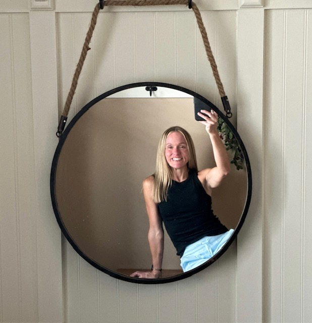

About Me
Hi, I’m Paula, a creative individual with a passion for web design, sewing, fitness, and bringing ideas life. I love blending technical skills with artistic expression, whether it’s crafting functional and visually appealing websites, designing and sewing unique garments, staying active through fitness, or exploring new creative outlets, I thrive on innovation and self-expression.
I'm currently looking for new job opportunities where I can apply my creativity, problem-solving skills, and dedication. While I'm still exploring the right path, I'm open to roles that allow me to grow, learn, and make an impact. If you’re looking for someone with a keen eye for detail, a hands-on approach, and a passion for creativity, let’s connect!
Web Design
I am currently studying web design and programming at Anoka-Ramsey Community College. I've been diving into courses focused on HTML and CSS, which have given me a solid foundation in front-end development. This portfolio website is a space I created to showcase the projects I've been working on as I continue to build my skills and grow.
In addition to my coursework, I’ve been teaching myself through online resources like YouTube, where I explore new techniques and tools in web development and design. I also started a blog to document what I’m learning, share helpful tips, and reflect on my progress. It’s been a great way to stay motivated and connect with others who are on a similar journey.
I’m excited to continue learning and plan to take additional courses in both design and development to broaden my expertise. Thanks for stopping by and feel free to check out my blog while you’re here!
Blog - Life with Paula MarieFitness
Fitness is more than movement—it’s discipline and growth. My approach to fitness mirrors my creative work: a commitment to progress, a focus on form, and a passion for pushing boundaries. Whether designing, building, or training, I believe in strength through consistency and creativity.
Creative Outlets
I have a huge passion for sewing and started my self-taught journey back in 2013. Everything I've learned comes from countless inspirational YouTube videos and the incredible work of independent pattern designers who generously share their knowledge.

Sewing is a major hobby for me, and I especially love creating dance costumes. It's always a rewarding challenge to design a pattern, sew it, and add the perfect embellishments.